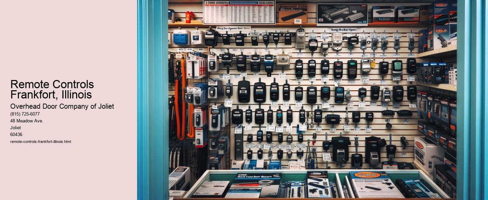

Serving Joliet, IL and surrounding Will County communities including:
Authorized Dealer for Overhead Door™ Openers and Accessories.

Remote controls have become an integral part of modern life, seamlessly blending into our daily routines as ubiquitous tools of convenience. In Frankfort, Illinois, a charming village known for its blend of historic charm and modern amenities, remote controls play a significant role in enhancing the quality of life for its residents. From managing entertainment systems to controlling smart home devices, these small yet powerful tools have revolutionized the way individuals interact with technology.
Frankfort, nestled in the heartland of Illinois, is a community that values both tradition and innovation.
In the realm of entertainment, remote controls have transformed the way Frankfort residents experience leisure. Gone are the days of manually adjusting dials on televisions or radios. Today, with a simple press of a button, individuals can explore a vast array of channels, streaming services, and digital content. This ease of access allows for personalized entertainment experiences, catering to diverse tastes and preferences. Families can gather for movie nights, sports enthusiasts can follow their favorite teams, and music lovers can create the perfect ambiance, all thanks to the power of remote controls.
Beyond entertainment, remote controls have found their way into various aspects of home management in Frankfort. With the rise of smart home technology, these devices now offer control over lighting, heating, and security systems. Residents can adjust their home environment to suit their needs with minimal effort, whether its dimming the lights for a cozy dinner or setting the thermostat for optimal comfort.
Moreover, remote controls have become vital tools for accessibility, empowering individuals with mobility challenges to maintain independence.
In conclusion, remote controls serve as a testament to the harmonious blend of tradition and modernity in Frankfort, Illinois. These devices embody the villages embrace of technology while preserving its community spirit. As tools of convenience and empowerment, remote controls not only enhance entertainment and home management but also support the values of accessibility and sustainability. In Frankfort, remote controls are more than just gadgets; they are integral components of a lifestyle that cherishes innovation without compromising on the warmth of a close-knit community.
Garage Door Accessories Frankfort, Illinois